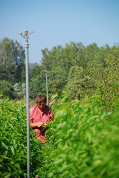

Pour tout renseignement, conseils ou pour commander contactez : 
Accès à la pépinière :
Je suis seul à travailler sur l'exploitation, donc je ne pourrais pas vous recevoir sans "rendez-vous", n'oubliez pas de m'appeller!
Depuis Vienne et l'autoroute A7 : prendre la D41 en direction de Grenoble et Beaurepaire, parcourir 6 km jusqu'à un rond point où bifurquent à droite la D41b en direction de Beaurepaire et la D502 à gauche en direction de Grenoble. à ce rond point aller tout droit sur la D41 en direction de Eyzin - Pinet. Prendre ensuite la deuxième route à droite, faire 300m et prendre à gauche une petite route (juste avant un petit pont). Laisser sur sa gauche un portail (entrée d'une carrière) et poursuivre la route sur encore 200m avant d'arriver à la ferme.
Depuis Grenoble : Dépasser le village d'Estrablin à droite pour continuer tout droit toujours sur la D502 en direction de Vienne, passer tout droit à un premier rond point, dépasser une déchetterie sur la droite pour arriver à 200m à un deuxième rond point. Prendre à gauche la direction de Eyzin - Pinet (D41). Prendre ensuite la deuxième route à droite, faire 300m et prendre à gauche une petite route (juste avant un petit pont). Laisser sur sa gauche un portail (entrée d'une carrière) et poursuivre la route sur encore 200m avant d'arriver à la ferme.
Depuis Bourgoin-Jallieu et l'autoroute A43 : prendre la D75 en direction de Vienne. Traverser le village de Septème, parcourir 10 km (toujours sur la D75) et arriver à un rond point, prendre à droite direction Vienne, dépasser une déchetterie sur la droite pour arriver à 200m à un deuxième rond point. Prendre à gauche la direction de Eyzin - Pinet (D41). Prendre ensuite la deuxième route à droite, faire 300m et prendre à gauche une petite route (juste avant un petit pont). Laisser sur sa gauche un portail (entrée d'une carrière) et poursuivre la route sur encore 200m avant d'arriver à la ferme.